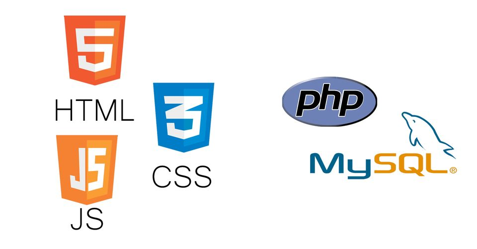
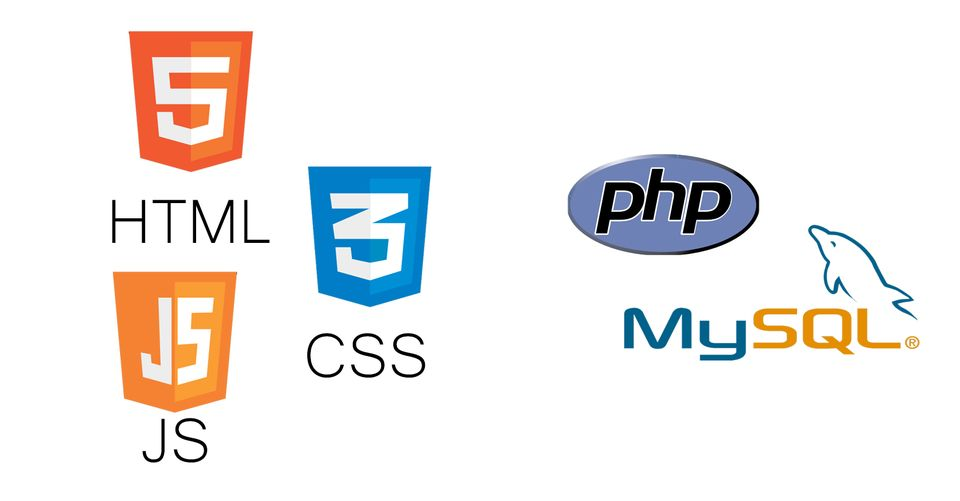

Pius Amartey
 



About Me
Recent First-Class Honors graduate in Computing and IT from the University of Wolverhampton, skilled in advanced web development, big data analysis, database management, and server administration. Eager to leverage this expertise in a dynamic IT role, passionate about utilizing modern technologies to solve challenges. Dedicated to continuous learning and improvement. I thrive on exploring innovative tech solutions and adapting to evolving environments to create impactful outcomes.
My Skills
Web Development
intermediate
Informations Systems Managment
intermediate
Python, C++, JavaScript, Java
intermediate
Database(SQL)
intermediate